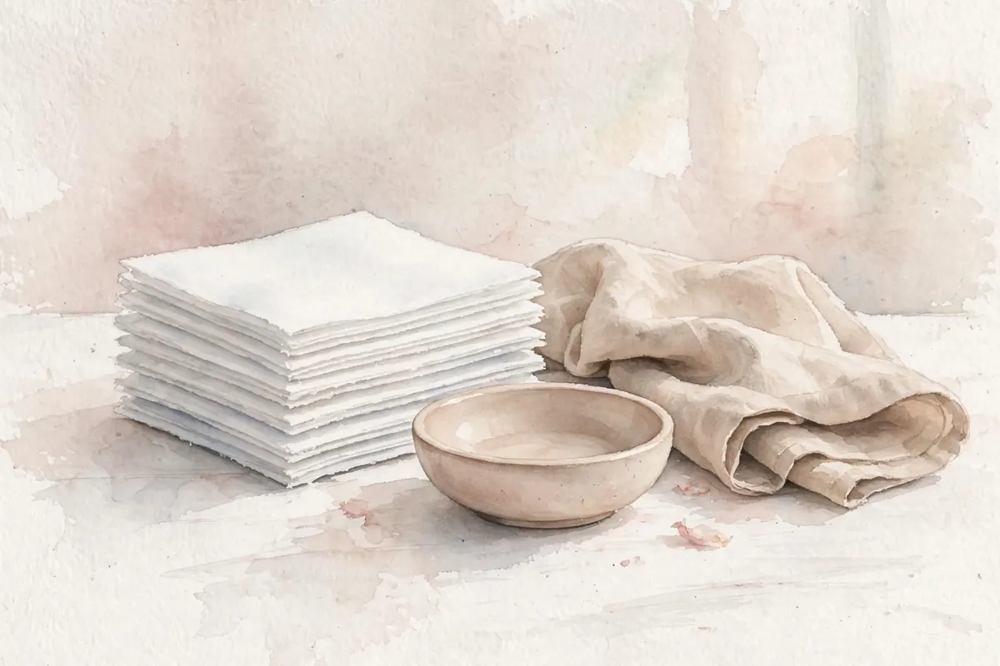

トップ ＞ スキンケア ＞ クレンジングシートの使い方：1枚で済ませる日と、洗顔までする日
クレンジングシートの使い方：1枚で済ませる日と、洗顔までする日

帰りが遅くなった日や、泊まりの出張先で、クレンジングシートに助けられたことがあります。洗面台の前でゆっくり洗顔する余裕がない日でも、シートが1枚あればメイクを落とす段取りが進みます。施術の現場でも、イベントのあとや移動の合間に「まず落とす」ための道具として、シートを持っているお客様がいます。この記事では、クレンジングシートの使い方と、パッケージの注意表示の読み方を整理します。特定の商品の話ではなく、シートという道具の使い分けの考え方です。
シートの仕組みと、表示の見方
クレンジングシートは、不織布などのシートにクレンジングの液を含ませたものです。シートを肌に当てて、メイクや皮脂の汚れを拭き取る仕組みです。液の量やシートの厚み、大きさは商品によって違います。パッケージには「1枚で済む」「洗い流し不要」といった表示があるものもありますが、その表示は商品ごとの設計によるものなので、まず自分の使い方に合っているかを確認することが大切です。
表示で確認したいのは、まず使い方の範囲です。目元や口元に使えるかどうか、まつげのエクステをしている場合の注意があるかどうか、といった点が書かれていることがあります。次に、開封後の目安です。シートは乾燥しやすいので、フタやシールをしっかり閉めること、開封してからどのくらいの期間で使い切るかの目安が書かれている場合は、それに従います。最後に、肌に合わないときの表示です。赤みやかゆみが出たときは使用をやめる、といった注意書きがある場合は、その通りにしてください。
こすらずに使う段取り
シートを使うときの基本は、こすらないことです。シートを折りたたんで、落としたい場所にそっと当て、液をなじませてから、ゆっくりとすべらせるように動かします。強くこすると、肌への負担が大きくなります。額や頬のような広い面は、シートの面を広く使います。目元や口元は、シートを小さく折って、細かい部分に当てるようにします。
1枚で顔全体を済ませようとすると、シートの汚れが広がってしまうことがあります。汚れがついた面は折り返して、きれいな面を使う、という進め方が無理のないやり方です。メイクの量が多い日は、1枚では足りないこともあります。その場合は、2枚目を使うことをためらわないでください。枚数を惜しんでこすり続けると、かえって肌への負担が増えます。
シートで落としたあとの段取りも、表示で確認します。「洗い流し不要」と書かれているものでも、肌の感触が気になるときは、ぬるま湯で軽くすすぐ、という選択肢があります。反対に、洗顔までする設計のシートの場合は、シートのあとに洗顔料で洗う流れになります。どちらが正しいということではなく、表示と自分の肌の感触で決める、という考え方です。
1枚で済ませる日と、洗顔までする日
クレンジングシートは、場面で使い分ける道具です。移動の合間や、泊まり先で洗面台が使いにくいとき、体調がすぐれずに長い手順がつらいときには、シート1枚で済ませる日があってもよいと思います。その日の汚れを落として、保湿の手順へ進む、という最低限の段取りを守ることが大切です。
反対に、時間に余裕がある日や、汗をかいた日、メイクの量が多かった日は、シートを「落としの入口」として使い、そのあと洗顔までする流れにすると、肌の感触がすっきりします。シートで大まかに落としてから洗顔すると、洗顔料の泡立ちもよくなります。シートか洗顔かの二択ではなく、シートを入口にして洗顔へつなげる、という組み合わせも考えられます。
シートの選び方は、使う場面から逆算すると考えやすくなります。持ち運ぶなら個包装のもの、自宅で使うなら大容量のもの、目元まで落としたいなら目元への使用が表示されているもの、というように、場面と表示を照らし合わせてください。肌の状態で気になることが続く場合は、皮膚科などの専門家に相談してください。この記事はシートの使い方の案内であり、商品ごとに表示がある場合は、そちらが優先です。
セラフィナ「シートは“拭く”より“当ててなじませる”。こすらないのが、現場のコツだよ」

セラフィナ｜美容の道具箱の案内役
「量と表示が分かれば、美容は失敗しない。」——セラフィナと白猫のモコが、買う前のチェックポイントを案内します。綺麗になりたい気持ちに正直に、でも表示は冷静に読むのが、このサイトの約束です。